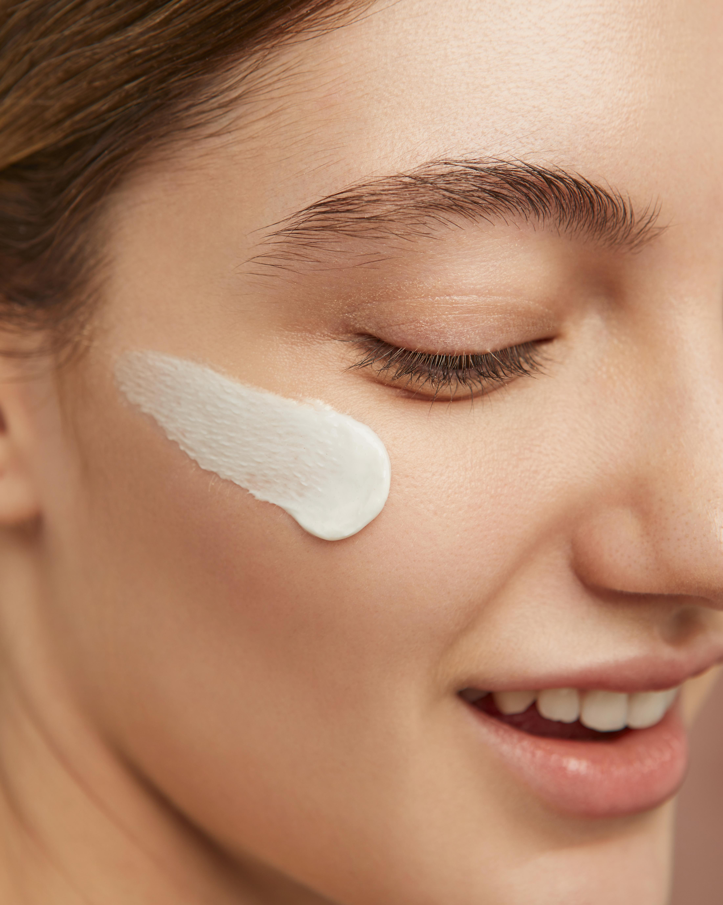
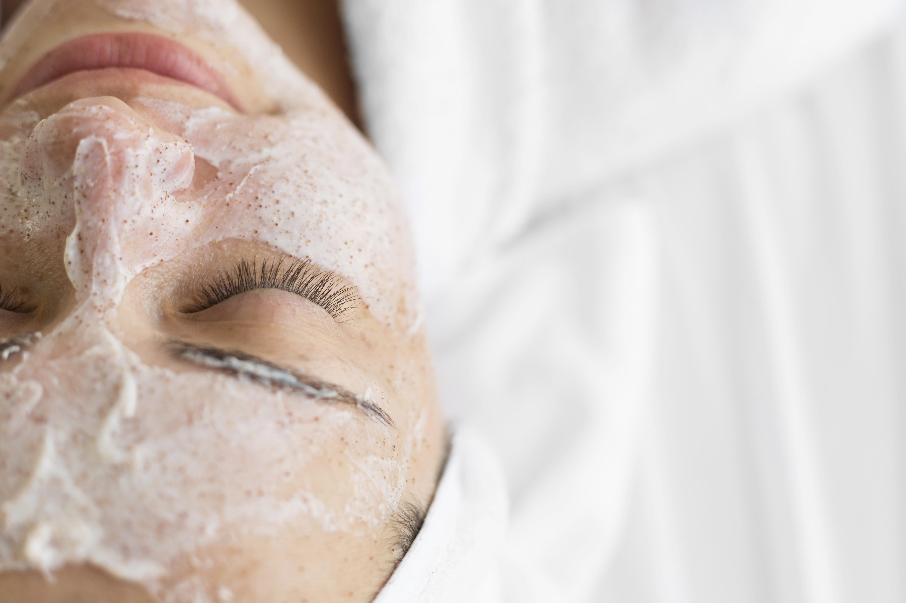
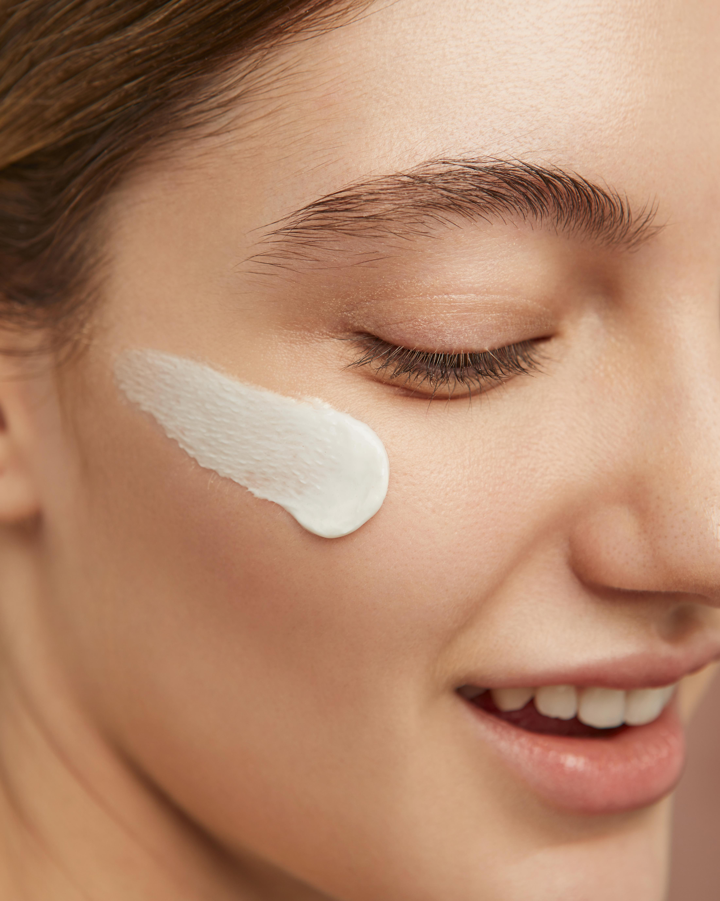
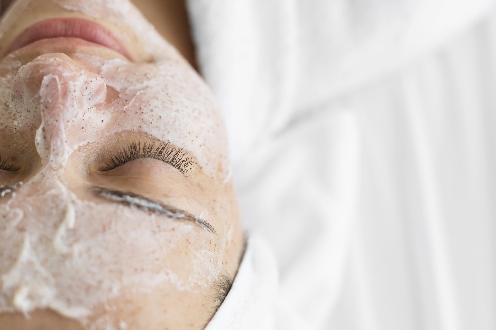

El "skin care" (cuidado de la piel) se refiere a la práctica de mantener y mejorar la salud de la piel a través de una rutina regular de cuidado. Incluye una variedad de prácticas, productos y hábitos diseñados para limpiar, hidratar, proteger y mejorar la apariencia general de la piel. La eficacia del cuidado de la piel puede variar según la genética, el tipo de piel y los productos específicos utilizados.
| Piel Normal: La piel normal no es demasiado grasa ni demasiado seca. Tiene un equilibrio adecuado de humedad y se muestra suave y flexible. | Piel Mixta: La piel mixta tiene características de piel normal, grasa y seca en diferentes áreas del rostro. Por ejemplo, puede tener una zona T (frente, nariz y barbilla) más grasa y mejillas más secas. | Piel Propensa al Acné: La piel propensa al acné tiene tendencia a desarrollar espinillas, puntos negros y granos debido a la sobreproducción de sebo y la obstrucción de los poros. |
|---|---|---|
| Piel Grasa: La piel grasa tiende a producir un exceso de sebo, lo que puede llevar a la aparición de poros dilatados, brillo y propensión a las imperfecciones. | Piel Sensible: La piel sensible es propensa a reacciones como enrojecimiento, irritación o picazón debido a factores externos o productos irritantes. | Piel Opaca o Desvitalizada: La piel opaca puede carecer de luminosidad y vitalidad. Puede estar relacionada con la falta de exfoliación o la acumulación de células muertas en la superficie. |
| Piel Seca: La piel seca carece de humedad y puede sentirse tirante o áspera. Puede ser propensa a la descamación y puede tener líneas finas más notables. | Piel Madura: La piel madura muestra signos de envejecimiento, como arrugas, líneas finas y pérdida de elasticidad. Suele requerir productos específicos para abordar estos problemas. |

Puedes contactarnos por correo electrónico: 21100848@cobachih.edu.mx
Visita nuestro sitio web oficial: skinCeuticals